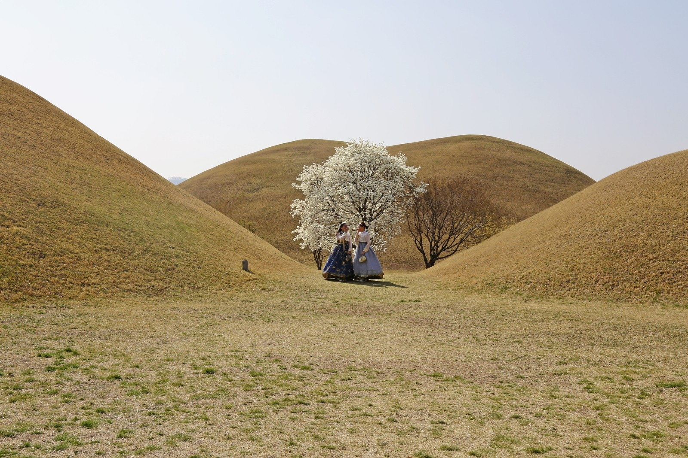

포항의 항구와 원도심
흥해의 관아에서 시작해 나루와 항구, 냉동창고, 배수지를 거쳐 전쟁의 기억을 살펴봅니다.
영일민속박물관 → 나루끝·동빈내항 → 동빈문화창고 → 수도산 → 학도의용군전승기념관
포항고등학교 · 2026 인문학 기행
항구와 시장, 오래된 건물과 무덤을 찾아갑니다. 옛 지도와 기록을 곁에 두고, 지금 남아 있는 모습을 살펴봅니다.
아래 세 안 가운데 확정된 코스로 진행합니다. 예약과 기관 협력은 교사용 운영표에서 관리합니다.
코스 살펴보기
흥해의 관아에서 시작해 나루와 항구, 냉동창고, 배수지를 거쳐 전쟁의 기억을 살펴봅니다.
영일민속박물관 → 나루끝·동빈내항 → 동빈문화창고 → 수도산 → 학도의용군전승기념관

해안의 물건을 관찰하고 생활도구와 전쟁 기록, 도시의 급수시설로 이어 갑니다. 해안 활동은 사전 협의가 필요합니다.
호미곶 해안 → 영일민속박물관 → 학도의용군전승기념관 → 수도산

발굴 기록과 전시품을 함께 봅니다. 고분과 교촌을 돌아본 뒤 유물 한 점의 설명문을 씁니다.
대릉원·천마총 → 쪽샘 → 교촌·최부자댁 → 국립경주박물관